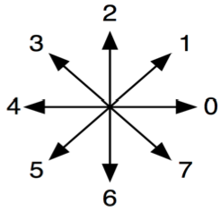
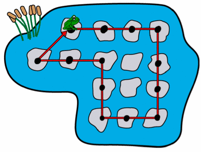
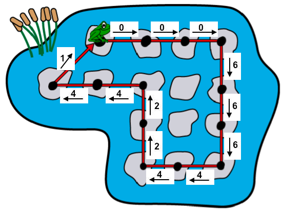

Une grenouille veut faire un peu d'exercice, en sautant de pierre en pierre dans un étang. Elle décide de faire le parcours présenté sur l'illustration ci-dessous. Chaque point noir représente un endroit où la grenouille atterrit après un saut.
La grenouille commence à la pierre en haut à gauche comme montré sur l'illustration, et veut y retourner à la fin de son parcours.
 On représente un saut en utilisant un nombre pour chaque direction, comme présenté sur l'illustration ci-dessus à droite. Quelle suite de nombres correspond aux sauts du parcours de la grenouille ?
Pour chaque saut de la grenouille, on a indiqué sur le schéma ci-dessous la direction correspondante :
Si on lit les chiffres en partant de la grenouille, en suivant son parcours et en finissant à la grenouille, on obtient la suite de chiffres "0, 0, 0, 6, 6, 6, 4, 4, 2, 2, 4, 4, 1" ce qui correspond à la solution B.
La bonne réponse était donc la réponse B.
Il s'agit ici de "coder" un processus sous forme d'une séquence d'actions : chaque action est ici un saut dans une direction donnée, il existe 8 directions possibles. Cet exercice utilise 2 notions fondamentales très utiles à l'informatique : la notion de codage (associer un symbole à chaque action) et la notion de séquence (suite ordonnée de symboles, qui, ici, représentent des actions).
De plus, la résolution du problème amène à comparer des motifs candidats. Elle nécessite soit de traduire le parcours de la grenouille en séquence de symboles (faire du codage), soit de dessiner les 4 parcours (faire du décodage) qui résulteraient des 4 séquences de symboles candidates, en les comparant au parcours de la grenouille.